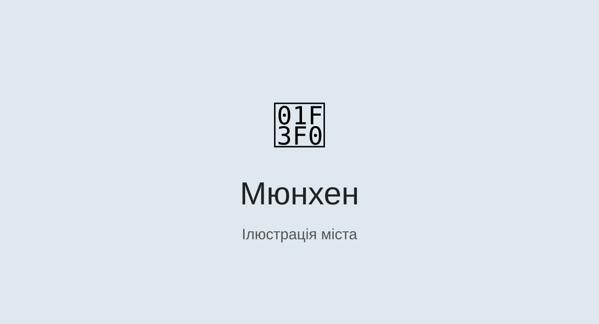

Мюнхен

Коротка характеристика
Мюнхен — велике місто на півдні Німеччини та столиця Баварії. Воно поєднує історичну архітектуру, музеї, зелені парки та сучасну інфраструктуру.
Чому я обрав це місто
Мені цікаве це місто завдяки баварській культурі, архітектурі та великій кількості місць для відпочинку.
Цікаві факти
- Мюнхен є столицею федеральної землі Баварія.
- У місті працюють відомі музеї та культурні установи.
- Одним із символів міста є Марієнплац.
Визначні місця
- Марієнплац
- Англійський сад
- Палац Німфенбург
Моя особиста оцінка
9/10